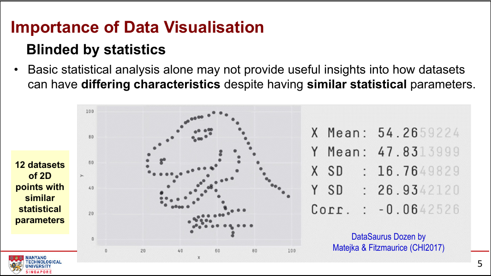
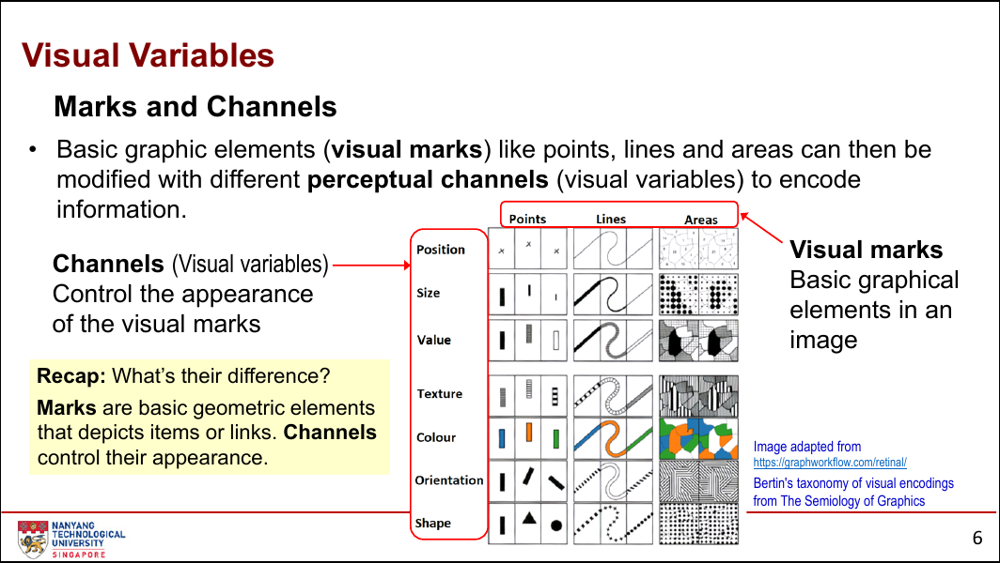
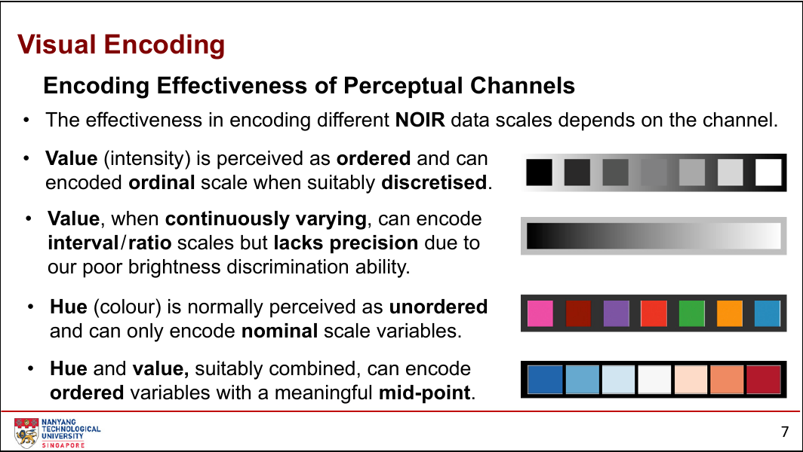
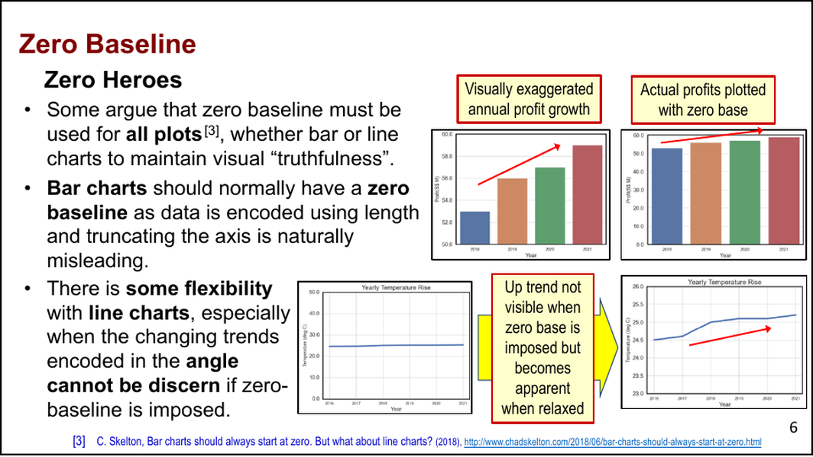
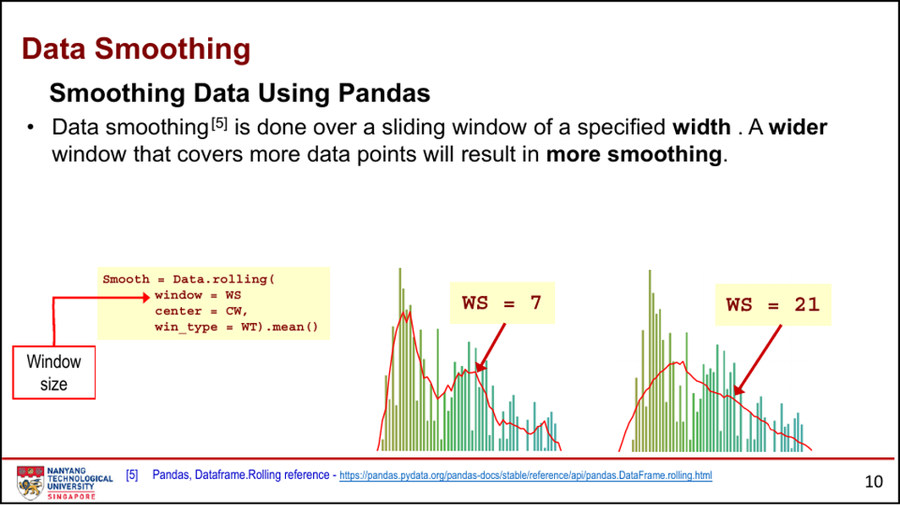
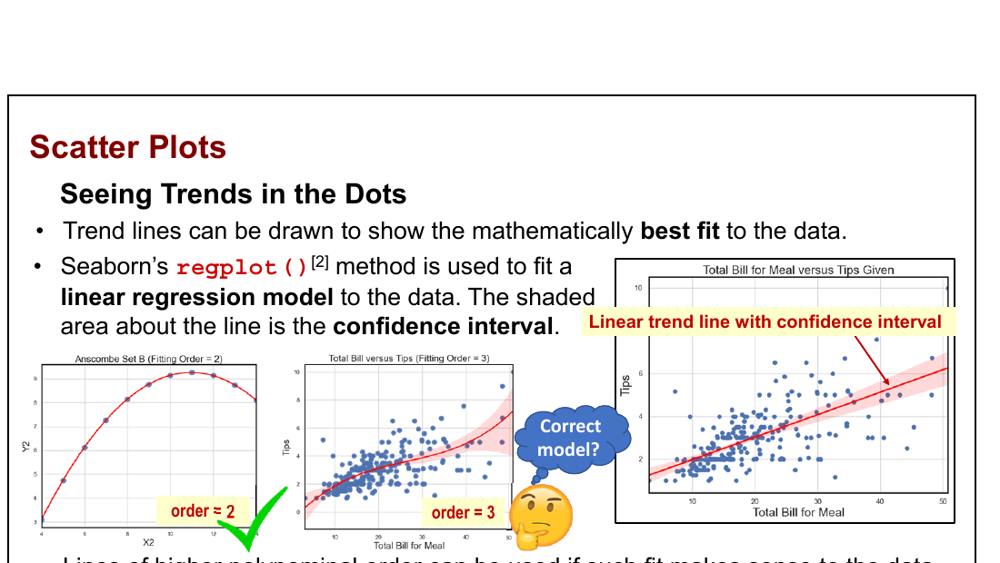
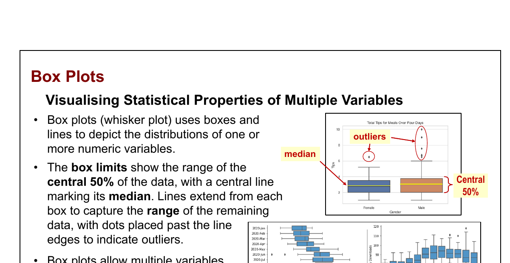
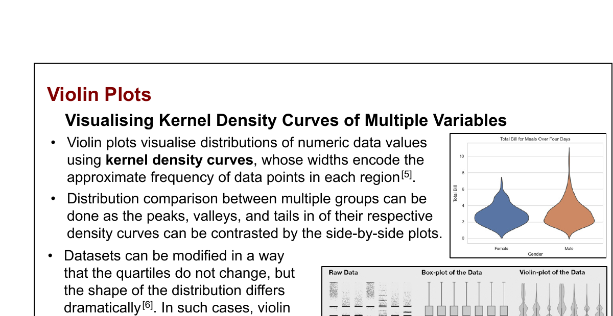
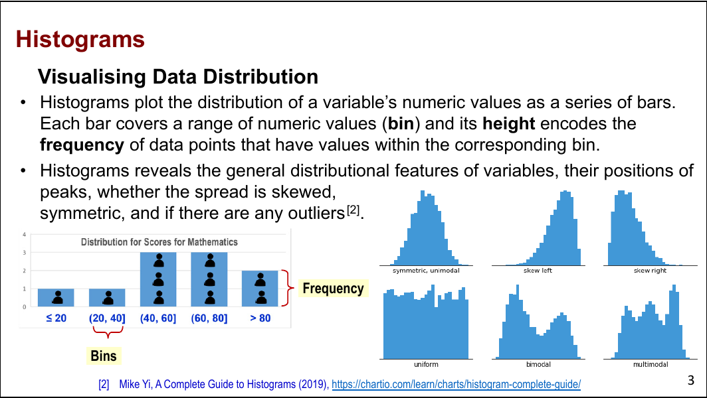

AI UX & Data Visualisation Design Principles
第一课建立数据可视化的基础判断框架：先理解数据的含义与属性，再选择视觉编码和图表类型，最后用清晰、诚实的方式探索数据并传达信息。
必须掌握的术语
| 术语 | 准确理解 |
|---|---|
| data visualisation | 把数据或信息表示成图、表、地图或其他视觉形式，让趋势、异常值、模式和关系更容易被看见和理解。 |
| exploration / explanation | 可视化的两种主要目的：探索数据以发现洞察；解释数据以传达明确的信息或故事。 |
| data model | 数据的低层结构，例如数字、二维坐标或表格中的行与列。 |
| conceptual model | 对数据领域含义的理解。同一个数值模型可以代表温度、地理位置或空间中的点。 |
| qualitative / quantitative | 定性数据描述类别与特征；定量数据可以计数或测量，并以数值表达。 |
| discrete / continuous | 离散数据只能取预先确定的值，通常来自计数；连续数据可在范围内取任意值，通常来自测量。 |
| NOIR scale | Stevens 的四种测量尺度：Nominal、Ordinal、Interval、Ratio。 |
| nominal | 只有类别标签，没有顺序或数值意义，例如性别、颜色和国家。 |
| ordinal | 类别有顺序，但相邻类别之间的差距没有可解释的数值意义，例如等级和满意度。 |
| interval / ratio | 区间尺度有可解释的差值但没有绝对零点；比率尺度有绝对零点，因此比例、乘法和除法有意义。 |
| dimension / dimensionality | 数据中同时被观察或编码的属性数量；表格通常以列表示维度、以行表示观测。 |
| visual mark | 图像中的基本几何元素，如点、线和面，用来表示数据项或数据之间的连接。 |
| visual channel / encoding | 控制视觉标记外观的方式，以及把数据属性映射到图像的过程。 |
| visual variables | Bertin 提出的视觉变量：位置、大小、明度、纹理、颜色、方向和形状。 |
| item mark / link mark | Item mark 表示独立数据项；link mark 表示数据项之间的成对关系或群组关系。 |
| redundant encoding | 用两个或更多视觉通道表达同一个变量，例如同时使用颜色与形状区分类别，以提高辨识速度和准确性。 |
| comparison / composition | 比较图关注数值之间的差异；构成图关注整体由哪些部分组成。 |
| relationship / distribution | 关系图关注变量之间的关联或模式；分布图关注数值在范围内如何展开。 |
| bin / frequency | 直方图把数值范围切成区间（bin），用柱高表示落入区间的数据点频数。 |
| histogram | 用连续数值区间及其频数展示单个数值变量的分布。它能帮助识别峰、偏态、离群值和双峰等结构；它不是把类别逐项计数的普通柱状图。 |
| KDE plot / bandwidth | 核密度估计图用连续平滑曲线近似数值分布；bandwidth 决定平滑程度。带宽太大可能抹去真实结构，太小可能把随机波动画成假峰。 |
| box plot / whisker plot | 用箱体、中位数线、须和单独标记的异常值压缩展示一个或多个数值变量的统计摘要，特别适合并列比较多组分布。 |
| violin plot / kernel density | 以核密度曲线的镜像轮廓展示数值分布；某一数值位置越宽，表示该区域的近似频率越高。它保留了箱线图难以表达的峰、谷和尾部形状。 |
| quartile / IQR | 四分位数把数据分成四部分；IQR 是 Q3 − Q1，箱线图用它表达中间 50% 的范围。 |
| zero baseline | 以 0 作为数值轴起点。柱状图通常应使用零基线，因为柱长直接编码数值；折线图可在必要时使用非零起点，但必须明确范围并避免夸大变化。 |
| aspect ratio | 绘图区宽度与高度的比例。它会改变折线斜率的视觉角度，使相同数据看起来更陡或更平。 |
| smoothing | 用滑动窗口或局部估计减弱短期波动以观察长期趋势；窗口越宽，曲线通常越平滑，也越可能掩盖峰值和异常。 |
| rolling window | 沿序列移动的局部数据窗口；每个位置只使用窗口内的数据计算均值或其他统计量。 |
| window / center / win_type | rolling() 的三个关键参数：窗口宽度、结果对齐到窗口中央还是右边缘，以及窗口内各点采用相等或特定形状的权重。 |
| moving baseline | 堆叠图中某一层以前一层的上边界作为不断变化的基线；除最底层外，各层因缺少共同基线而难以精确比较。 |
| regression / confidence interval | 回归线估计变量关系的趋势；线周围的置信区间表达估计的不确定性，而不是所有未来观测必然落入的范围。 |
| linear regression trend line | 通过一条直线概括散点中最符合线性假设的总体趋势。它描述关联的最佳线性拟合，不证明因果，也不保证每个点都靠近这条线。 |
| LOWESS | Locally Weighted Scatterplot Smoothing，使用邻近数据点的局部加权回归估计变化趋势的非参数方法。 |
| frac | LOWESS 每次局部拟合使用的数据比例，取值在 0 到 1 之间；越小越能追踪局部波动，但曲线越不平滑。 |
核心知识
1.1 Introduction｜为什么需要数据可视化
本章图表 / 案例：DataSaurus Dozen 与 Anscombe’s Quartet 的散点图案例；机器学习数据中的异常值、类别不平衡与特征关系可视化。
可视化不是把数据“装饰得更漂亮”，而是把数据转化为更容易被人观察、比较和理解的形式。它帮助我们发现文字或基础统计量不容易暴露的趋势、异常值、模式和关系。
Anscombe’s Quartet 和 DataSaurus Dozen 说明：统计参数相近的数据集，形状和关系可能完全不同。因此，统计分析与可视化需要互相补充。
在 AI 和机器学习数据集中，可视化还能帮助发现异常值、类别不平衡和特征之间的关系，从而辅助特征选择与数据质量判断。

1.2 Data Attributes｜先理解数据，再决定怎么画
本章图表 / 方法：Gauge、Thermometer、Bullet Graph；饼图、柱状图、直方图、散点图与堆叠柱图；层级图、Treemap、Sunburst、Circle Packing；地图、点密度图、气泡地图与热力图。
数据模型告诉你数据长什么样，概念模型告诉你数据意味着什么。相同的数值，若代表温度、日期或地理坐标，后续的运算和可视化选择可能完全不同。
判断数据时至少要问三件事：
- 它是定性还是定量？是离散还是连续？
- 它属于 nominal、ordinal、interval 还是 ratio？
- 它有多少维度，是否包含层级、时间或空间信息？
NOIR 尺度会影响允许的运算、适合的统计分析、可使用的视觉编码，以及最终应选择的图表类型。
| 尺度 | 可以可靠判断什么 | 课件中的常见图表 |
|---|---|---|
| Nominal | 是否同类、各类数量；没有大小顺序。 | 柱状图、饼图 |
| Ordinal | 类别先后与等级；相邻等级的差距不一定相等。 | 按固有顺序排列的柱状图或饼图 |
| Interval | 顺序与差值；没有绝对零点，不能把两数之比解释为“几倍”。 | 直方图 |
| Ratio | 顺序、差值、比例与倍数；存在绝对零点。 | 可使用更广泛的定量图表，包括按面积编码的气泡图 |
Data Dimensionality 与特殊结构
0 维数据只有一个值，可用仪表盘、温度计图或 bullet graph 表达；1 维数据只有一个属性；2 维数据包含两个相关属性；当维度继续增加时，需要组合位置、颜色、大小、形状等视觉变量。
层级数据适合树状图、Treemap、Sunburst 和 Circle Packing；时间数据可以使用折线图、柱状图、堆叠面积图或周期性的 Polar Area Chart；空间数据通常需要地图、点密度图、气泡地图或热力图。
1.3 Visual Encoding｜把数据映射成图像
本章图表 / 方法：2D Scatter Plot、双 Y 轴柱图；Import / Export 折线与面积图、Treemap，以及用点、线、面和视觉通道拆解现有图表的方法。
视觉化过程可以理解为：数据与概念模型 → 选择视觉标记 → 选择视觉通道 → 生成图像。点、线、面是标记；位置、大小、颜色等是控制标记外观的通道。
标记还要区分 item mark 与 link mark：前者表示单个对象，后者表示对象之间的连接。选择标记之前必须先判断你是在画“项目”，还是在画“关系”。

不同视觉通道对不同数据尺度的表达能力不同。位置通常更适合精确比较定量值；颜色的色相更适合区分类别；明度可以表达有序或定量变化，但连续明度的精确辨识能力有限。

Mackinlay 在 Bertin 的基础上进一步按 quantitative、ordinal、nominal 数据对视觉通道的有效性排序。这里的“有效”指目标读者能否迅速、准确地感知信息，而不是图形看起来是否丰富。
Redundant encoding 可以在还有空闲视觉通道时使用，例如散点图同时用颜色和形状表示类别，或柱状图同时用柱长和数值标签表示数量。它能提高辨识速度和准确性，但不能用相互矛盾的通道表达同一变量。
不要只追求“能放下更多维度”。应让每个数据属性都使用与其尺度匹配、前后一致的视觉变量；高度和宽度会共同影响面积感知，因此不能只改变柱宽来暗示并不存在的数值差异。
1.4 Comparison Plots｜柱状图、折线图与零基线
本章图表 / 方法：折线图、垂直与水平柱状图，以及用于观察长期趋势的滑动平均平滑线。
横轴是无序类别、目标是比较离散数值时，优先考虑柱状图；横轴是时间或其他 interval / ratio 尺度、目标是观察连续变化趋势时，折线图通常更合适。类别标签很长时，横向柱状图比旋转文字更容易阅读。
Zero baseline 不是对所有图表“一刀切”的规定。柱状图用长度表达数值，截断数值轴会破坏柱长之间的比例，因此通常应从 0 开始。折线图主要通过位置、斜率和变化形态表达趋势；若零基线让真实变化无法辨认，可以收窄纵轴范围，但必须清楚标示刻度与范围，并避免用不合理的范围制造夸张趋势。

折线图的纵轴尺度和绘图区长宽比都会改变线段角度。课件给出的 “banking to 45°” 是一种辅助判断：让典型线段接近 45°，有助于观察变化，但不能为了视觉冲击而扭曲尺度。
平滑可以揭示噪声时间序列中的长期趋势，但展示“平滑曲线”不等于对数据做了可靠平滑。应说明窗口宽度与位置，并保留原始序列作为参照；窗口过宽会抹去峰值，错误的曲线插值还可能制造数据中不存在的趋势。
用 Pandas rolling() 计算滑动平均
课件使用下面的统一形式表达平滑：先用 rolling() 建立窗口，再用 mean() 计算窗口均值。
# 课件中的通用形式
smooth = data.rolling(
window=window_size,
center=center_window,
win_type=window_type,
).mean()
# 7 日居中平均：适合把结果对齐到窗口中央的日期
daily_cases["mean_7d"] = daily_cases["new_cases"].rolling(
window=7,
center=True,
).mean()
# 21 日窗口更平滑，但会隐藏更多短期峰值
daily_cases["mean_21d"] = daily_cases["new_cases"].rolling(
window=21,
center=True,
).mean()
| 参数 | 改变什么 | 读取时必须说明 |
|---|---|---|
| window | 每次统计覆盖的数据点数量；7 比 21 保留更多局部变化。 | 窗口单位与宽度，以及为什么适合该数据周期。 |
| center | True 把结果对齐到窗口中央；默认值把结果对齐到右边缘。 | 趋势值究竟代表当前点周围，还是截至当前点的历史窗口。 |
| win_type | None 为等权；如 "cosine" 可降低窗口远端数据的影响。 | 是否使用加权窗口，以及选择该权重形状的理由。 |

不要把 Excel 的“smoothed line”外观选项当作数据平滑：它可能只改变曲线插值并制造原数据中不存在的走势。可靠做法是明确计算窗口统计量，同时把原始序列作为参照。
1.5 Composition Plots｜共同基线决定比较精度
本章图表 / 方法：Pie Chart、Donut Chart、Stacked Bar Chart、100% Stacked Bar Chart 与 Stacked Area Chart；必要时回退到柱状图或多条折线图。
饼图适合类别较少、差异明显的静态构成；切片差异很小或类别过多时，柱状图通常更容易比较。百分比堆叠柱状图便于比较占比，但会隐藏总量差异。
饼图应保持简单：类别没有固有顺序时可以按切片大小排序；过小类别可在不破坏含义的前提下合并为 “Other”。Exploded pie 的间隙会扭曲部分与整体的判断，3D 透视还会让靠近观察者的切片显得更大。Donut 与饼图的可读性没有本质差异，但中心区域可以放置总量等补充信息。
堆叠柱状图的类别颜色必须与变量类型匹配：无序类别用 qualitative palette，有序类别使用 sequential palette，存在有意义中点时才考虑 diverging palette。默认按总量从大到小排列；若横轴具有时间等固有顺序，则保留该顺序。
堆叠面积图适合同时观察总量与随时间变化的构成。最底层共享固定基线，其他层位于 moving baseline 上，因此中间类别难以精确比较；若每个类别的准确变化都重要，应改用多条折线图。
1.6 Relationship Plots｜位置、大小与颜色共同编码模式
本章图表 / 方法：Scatter Plot、Linear Regression Trend Line、LOWESS、Bubble Plot 与 Heatmap。
散点图使用二维位置展示两个定量变量之间的关系；线性回归和 LOWESS 可以辅助观察趋势。气泡图可以增加一个定量维度，但面积比较不如位置精确，因此应谨慎使用。
Linear Regression Trend Line：一条直线在概括什么
趋势线尝试用一条数学上的最佳拟合直线概括散点整体的线性关系。它适合回答“随着 x 增加，y 是否总体上升或下降、上升或下降得有多快”，但不能把相关直接解释成因果，也不能替代对异常值、分组和数据生成机制的检查。
seaborn.regplot() 可以拟合线性回归并显示置信区间；阴影带表达的是趋势线估计的不确定性，不是单个新观测值的预测范围。课件的 tips 数据中，线性模型给出大约 13% 的稳定小费比例；高阶曲线虽然更贴近部分散点，却会在数据噪声与两端异常值的影响下制造缺乏解释依据的弯折。
import seaborn as sns
# 散点 + 线性趋势线；ci=95 显示 95% 置信区间
ax = sns.regplot(
data=tips,
x="total_bill",
y="tip",
ci=95,
)
ax.set(title="Total bill versus tip")

只有在数据机制支持时才使用更高阶多项式。高阶曲线可能追随噪声和端点异常值，不能因为“更贴近散点”就认定模型更正确；当关系明显不是单一直线时，再比较 LOWESS 等局部方法。
LOWESS 不预设一条全局函数，而是从左到右对邻近点反复做局部加权最小二乘拟合。邻近点通常使用三立方权重 w(x) = (1 − |d|³)³，距离越远权重越低。Statsmodels 的 frac 决定每次使用的数据比例：课件示例中 frac=0.4 较平滑，降低到 0.2 会更贴近局部变化，但也更容易呈现噪声。
from statsmodels.nonparametric.smoothers_lowess import lowess trend = lowess(tips, total_bill, frac=0.4) ax = sns.lineplot(x=trend[:, 0], y=trend[:, 1])
气泡图的第三个定量变量必须按面积而不是半径缩放；数值翻倍时，半径只应扩大到原来的 √2 倍。负值可以用空心气泡表示，但若能把正负变量放在坐标轴上，应优先使用位置编码。
热力图用网格中的颜色表达数值，两条轴通常是类别，或把定量变量分箱后形成离散单元格。必须提供可解释的颜色图例，并根据数据选择 sequential 或 diverging 色阶。
1.7 Distribution Plots｜分箱与统计摘要改变可见结构
本章图表 / 方法：Standard Histogram、Histogram with Multiple Categories、KDE Plot、Box Plot（Whisker Plot）与 Violin Plot。
直方图的 bin 数量和边界会改变人们对分布形状的理解；太多会产生噪声，太少会隐藏细节。箱线图突出中位数、四分位数和异常值；小提琴图进一步展示核密度曲线的形状。
Histogram：先定义区间，再读取形状
直方图把一个数值变量切成连续的区间（bin），每根柱的高度是落入该区间的数据点频数。读图时先看峰在哪里、分布是否对称或偏斜、是否有多个峰，以及是否出现远离主体的值；这些结构往往比均值和方差更直观。
import seaborn as sns
# 对单个数值变量分箱；柱高表示每个区间中的观测数
ax = sns.histplot(
data=students,
x="math score",
bins=10,
stat="count",
)
ax.set(xlabel="Math score", ylabel="Frequency")
先根据数据可取的值和分析任务设定 bin：例如整数分数应避免 1.5 这样的分数宽度；然后比较不同 bin 数量与边界下的形状是否仍然成立。不要把多个类别的直方图随意重叠在一张图上，课件指出这容易造成遮挡与混乱；需要比较多组分布时，优先配合箱线图、小提琴图或分面图。
bin 宽度还要匹配数据可取的值。整数变量若使用 1.5 之类的分数宽度，不同 bin 能容纳的有效整数数量可能不一致，图形会出现人为的凹凸。
KDE Plot：用连续曲线估计分布
KDE（Kernel Density Estimation）与直方图一样用于观察数值分布，但它不把数据切成柱状区间，而是把每个观测值平滑合成为连续的密度曲线。因此，它在叠加或比较多组分布时通常更清爽；纵轴表示的是 density，不是频数，也不是某个数值点的概率。曲线下的总面积才等于 1。
import seaborn as sns
# 连续密度曲线：bw_adjust=1 使用默认带宽，cut=0 不超出观测范围
ax = sns.kdeplot(
data=students,
x="math score",
bw_adjust=1,
cut=0,
)
ax.set(xlabel="Math score", ylabel="Density")
bw_adjust 是最重要的检查项：增大它会让曲线更平滑，可能合并真实的双峰；减小它会保留更多局部起伏，也可能把随机波动误画成峰。cut=0 可避免平滑曲线延伸到观察范围之外；对于只能为正、有天然边界，或大量重复整数的离散数据，KDE 仍可能误导，应和直方图一起核对。
Box Plot：用统计摘要并列比较多组分布
箱线图的箱体从 Q1 到 Q3，中线是中位数 Q2；IQR = Q3 − Q1。上下须延伸到不超过 Q1 − 1.5 × IQR 与 Q3 + 1.5 × IQR 的最远实际数据点，范围外的数据单独标记为异常值。
它把每组的中间 50%、中心位置、整体范围与异常值压缩到同一尺度，适合快速比较多组数值变量，也可以横向或纵向排列。代价是它不展示分布的完整形状：两组数据的四分位数相同，峰、谷或双峰结构仍可能完全不同；这时要配合直方图或小提琴图。
import seaborn as sns
# 每个 gender 一只箱体：比较数学分数的中位数、IQR 与异常值
ax = sns.boxplot(
data=students,
x="gender",
y="math score",
)
ax.set(xlabel="Gender", ylabel="Math score")

Violin Plot：让分布形状重新可见
小提琴图以核密度曲线的镜像轮廓展示一个或多个数值变量；在某个数值位置越宽，代表该区域的近似频率越高。把多组小提琴并排后，可以直接对照各组的峰、谷、偏态与尾部，而不仅是对照中位数和四分位数。
这正好补上箱线图的边界：不同数据集可以拥有相同的四分位数，却有完全不同的分布形状。小提琴图可以在内部叠加箱线图或四分位线，让统计摘要和形状信息同时可见。
import seaborn as sns
# inner="box" 在每组密度轮廓中叠加箱线图摘要
ax = sns.violinplot(
data=students,
x="gender",
y="math score",
inner="box",
cut=0,
)
ax.set(xlabel="Gender", ylabel="Math score")
这里的 inner="box" 把箱线图摘要放进密度轮廓；cut=0 让轮廓不延伸到观测数据范围之外。两者不改变原始数据，只改变对分布的呈现方式。
需要比较两个互补类别在同一组内的分布时，可使用 split violin：左右半边各编码一个类别。它适用于清晰的二分类对照；若类别更多，应改为并排的小提琴图，避免把读图任务塞进同一轮廓。
# 每个 lunch 组内，对比 female 与 male 的数学分数分布
sns.violinplot(
data=students,
x="lunch",
y="math score",
hue="gender",
split=True,
inner="quartile",
)


1.8 Know The Right Chart Type｜选择图表前先问问题
本章图表 / 方法：Andrew Abela’s Chart Chooser；以 Comparison、Composition、Relationship、Distribution 四个任务类别组织候选图表。
| 目的 | 常见图表 | 适合回答的问题 |
|---|---|---|
| Comparison 比较 | 柱状图、折线图等 | 谁更高？变化有多大？不同组或时期如何比较？ |
| Composition 构成 | 饼图、堆叠图等 | 整体由哪些部分组成？各部分占比如何？ |
| Relationship 关系 | 散点图、气泡图、热力图 | 两个变量是否相关？是否存在聚类、异常或趋势？ |
| Distribution 分布 | 直方图、箱线图、小提琴图 | 数据集中在哪里？是否偏斜、双峰或存在异常值？ |
使用 Chart Chooser 之前，先明确：一张图要展示几个变量？每个变量有多少数据项？数据是按时间、对象还是组别比较？最终是要比较、展示构成、寻找关系，还是理解分布？
Andrew Abela’s Chart Chooser 的作用是把这些问题组织成决策路径，而不是替你机械选图。得到候选图表后，仍要回到 NOIR 尺度、数据维度、是否需要精确读取，以及读者真正要完成的任务进行复核。
好的可视化让用户快速理解信息并获得有意义的洞察；同时必须清晰、准确、诚实，避免通过坐标轴、颜色、比例或裁剪方式误导读者。
常见错误
- 只根据图表外观或个人偏好选图，没有先判断数据属性和沟通目的。
- 把 nominal 类别当作连续数值计算平均值，或把 ordinal 类别之间的差距当成等距。
- 对 interval 数据使用比例、乘法或除法时忽略它没有绝对零点的事实。
- 用颜色色相表达有严格大小关系的定量数据，导致读者难以排序和精确比较。
- 直方图 bin 太多、太少或边界不合理，改变了对分布的判断。
- 气泡图按半径而不是面积缩放数值，造成视觉比例失真。
- 热力图没有颜色图例，或没有根据是否存在有意义的零点选择 sequential / diverging 色阶。
- 把相关关系或趋势线直接解释成因果关系；可视化本身不能替代研究设计。
- 柱状图不从零开始，导致柱长失去真实比例；或折线图虽然使用非零起点，却没有清楚标示轴范围。
- 通过不恰当的长宽比夸大或压平折线趋势，或只展示平滑结果而隐藏原始波动、
window、center和win_type。 - 把 Excel 的视觉曲线平滑当作滚动统计，导致图中出现原始数据并不支持的弯曲趋势。
- 仅凭高阶多项式更贴近散点就认为模型更正确，忽略噪声、异常值和领域机制。
- 用 3D、爆炸间隙或过多切片扭曲饼图的部分—整体比较。
- 用堆叠面积图精确比较位于 moving baseline 上的中间类别，忽略它们没有共同基线。
- 为了制造冲击力而隐藏基准、夸大差异或省略重要数据，违背清晰与诚实的可视化伦理。
练习
- 为以下变量标注 qualitative / quantitative、discrete / continuous 以及 NOIR 尺度：咖啡豆种类、采摘年份、咖啡豆重量、拿铁杯型（tall / grande / venti）。
- 为每个变量写出一个合理的可视化方式，并说明它要支持的比较或解释。
- 用一个学生成绩数据集，分别提出一个 comparison、composition、relationship 和 distribution 问题。
- 为每个问题选择图表，并说明为什么其他图表可能不如你的选择清晰。
- 找一张你认为“看起来很有说服力”的图，检查零基线、轴范围、长宽比、颜色、图例和数据来源。
- 写出它帮助你发现的洞察，以及它可能误导读者的地方；然后改成一张更清晰、诚实的图。
- 选择一段至少 60 个点的时间序列，分别计算
window=7与window=21的滑动平均，并把原始序列与两条结果画在同一张图中。 - 比较
center=False与center=True的对齐差异，说明每条平滑线在某个日期代表的是哪一段数据。 - 指出哪一个峰值被宽窗口削弱，并解释这种损失对探索和解释任务分别有什么影响。
- 在同一散点数据上比较线性回归、三阶多项式与 LOWESS（至少两个
frac值），说明哪些变化来自模型假设，哪些可能只是噪声。 - 在同一整数数据上改变直方图的 bin 宽度，并用箱线图和小提琴图交叉检查峰、尾部与异常值是否被隐藏。
rolling() 与 LOWESS 的基本代码，说明关键参数如何改变结果，并指出图表可能造成的误读。